Opening and Closing Plenary Sessions
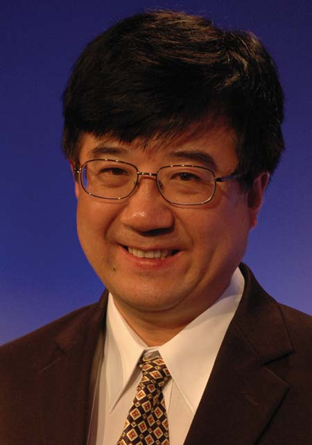
Speaker: Dr. Wen Tong
(Head of Wireless Research and the Head of Communications Technologies Laboratories, Huawei)
Title of Presentation:
5G Wireless
Abstract:
With the rapid migration of all the network access service onto mobile devices, the unprecedented growth of mobile traffic data presents a critical challenge to wireless industry, especially the ultimate capacity of the mobile network and how to deliver such a capacity is a key topic for the research community, and the traditional information transmission and processing paradigm is required to be further explored and expanded. In this talk, we will point out the demand for technology innovations and breakthroughs in several fronts, and the needs and progresses for fundamental research to improve the spectrum efficiency, the need for re-architect the radio networking protocol and network architecture. We will also present the advanced computing technology impact on the wireless networking, form device to core networks, especially the fusion of cloud-computing and networking technologies and summary the path towards the evolution of 5G wireless technology in 2020 time frame.
Biography:
Dr. Wen Tong is the Huawei Fellow; the Head of Wireless Research, and the Head of Communications Technologies Laboratories, Huawei 2012 LAB. Prior to joining Huawei in March 2009, Dr. Wen Tong was the Nortel Fellow and global Head of the Network Technology Labs at Nortel. He received the M.Sc. and Ph.D degrees in Electrical Engineering in 1986 and 1993 and joined the Wireless Technology Labs at Bell Northern Research in 1995 in Canada. He has pioneered fundamental technologies in wireless with 180 granted US patents. Dr. Tong was Nortel’s Most Prolific Inventor. Dr. Tong has conducted the advanced research work spanning from 1G to 4G wireless at Nortel. He had been the director of Wireless Technology Labs from 2005 to 2007. From 2007 to 2009, Dr. Tong was the head of Network Technology Labs, responsible for Nortel’s global strategic technologies research and development. In 2007, Dr. Tong was inducted as Nortel Fellow. Since 2010, Dr. Tong is the vice president and head of Huawei wireless research leading one of the largest wireless research organizations in the industry with more than 700 research experts. In 2011, Dr. Tong is appointed the Head of Communications Technologies Labs of Huawei 2012 LAB, a corporative centralized next generation research initiative. In 2011, Dr. Tong was elected as Huawei Fellow. Dr. Tong serves as Board of Director of WiFi Alliance and Board of Director of Green Touch Consortium.
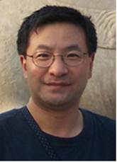
Speaker: Dr. Geng Wu
(Chief Scientist and director of Standards and Advanced Technology at Intel Corporation)
Title of Presentation:
Devices and Networks for Future Embedded Mobile Internet
Abstract:
The wireless industry made significant progresses in the past decade by bringing billions of users and intelligent devices online. These technology innovations fundamentally transformed the ways of people and machines communicating and collaborating with each other. This trend will continue into the next decade but at a much larger scale. Since we are practically at the theoretic limit of air link design, and our frequency bands become increasingly congested, our technology focus has to shift from spectral efficiency to network efficiency and to energy efficiency. To make this technology transition even more challenging, the needs to support more complex mobile applications, the explosive growth of the number of devices, the proliferation of local and indoor computing from wearable devices, and the required commination and processing of sensor data from future intelligent society will further amplify and accelerate this process. This talk discusses the fundamental options we have to solve these problems, the research directions for Horizons 2020 and the technology challenges yet to be addressed.
Biography:
Dr. Geng Wu is the Chief Scientist and a director of Standards and Advanced Technology at Intel Corporation. He has over 20 years of research and development experience in the wireless telecommunication industry, contributed extensively to 2G, 3G and 4G air interface technology and network architecture development. Prior to Intel, he was a director of Wireless Architecture and Standards at Nortel Networks, responsible for wireless technology and standards development. He obtained his B.Sc. degree in electrical engineering from Tianjin University, China, and his Ph.D. degree in telecommunications from Laval University, Canada.
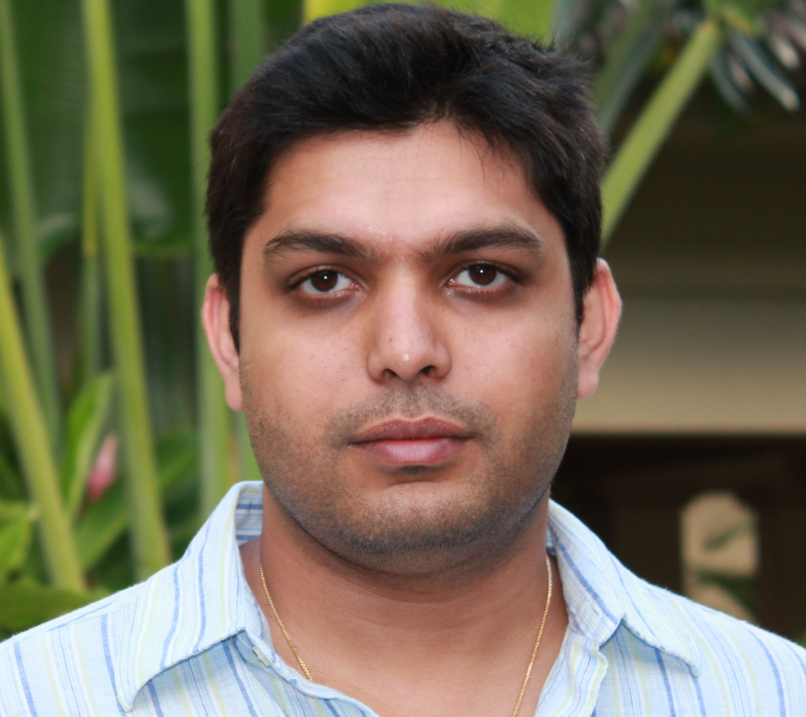
Speaker: Dr. Ranveer Chandra
(Senior Researcher at Microsoft Research)
Title of Presentation:
Dynamic Spectrum Access in the TV White Spaces & Beyond
Abstract:
(To be announced.)
Biography:
Ranveer Chandra is a Senior Researcher at Microsoft Research. His research is primarily in the area of wireless and mobile systems, and he is currently leading research projects on white space networking, low-latency wireless, and energy efficiency of mobile devices. Ranveer was invited to the FCC to present his research on white spaces, and spectrum regulators from India (including the TRAI Chairman), China (SARFT), Brazil (ANATEL), Singapore (IDA), and US (including the FCC Chairman) have visited the Microsoft Campus in Redmond to see a live demonstration of his research. Previously, Ranveer developed VirtualWiFi, which is amongst the top 5 downloaded software released by Microsoft Research with more than 200,000 downloads, and has shipped as a feature in Windows 7 and Windows 8. Ranveer has published more than 45 research papers and filed over 80 patents, 30 of which have been granted. He has won several awards, including the best paper awards at ACM CoNext 2008 and ACM SIGCOMM 2009, the Microsoft Graduate Research Fellowship, the MIT Technology Review Top Innovators under 35 (TR35 2010), and Fellow in Communications of the World Technology Network. Ranveer has an undergraduate degree from IIT Kharagpur, India and a Ph.D. from Cornell University in 2005.
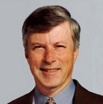
Speaker: Dr. Robert C. Simmonds
(Chairman at Lenbrook Corp.)
Title of Presentation:
A Brief History of Clearnet
Abstract:
Clearnet Communications was a major Canadian business success which continues on today as the wireless component of TELUS, Canada’s second largest telecommunications company offering service to approx 8 million subscribers. Clearnet was initially created in 1983 by Bob Simmonds, his father and partners as a nationwide wireless carrier delivering SMR services (2-way dispatch via trunked radio technology in the 806-821/851-866 MHz band). From this rather modest beginning, Clearnet pioneered ESMR and CDMA services in Canada and developed into one of Canada’s largest and pre-eminent wireless telecommunications service providers. By 2000, Clearnet was often loosely described as the Canadian equivalent to Sprint-Nextel in the US. Clearnet was acquired by TELUS for $6.6B in October 2000, a transaction which still stands as the largest telecom deal ever done in Canada. This talk will review some of the origins and significant events and highlights of Clearnet’s evolution, as well as touch on some of Bob’s current areas of interest.
Biography:
Bob Simmonds is a seasoned Canadian telecommunications executive. He was the Founder and Chairman of Clearnet Communications which pioneered 800 MHz SMR service in Canada, and launched of two state-of-the-art digital wireless networks, a national ESMR network in 1996 and Canada’s first national CDMA PCS network in 1997. In 2000, Clearnet was acquired by TELUS Corporation for $6.6 billion (CDN) in the largest telecommunications deal in Canadian history. Bob continued to work for TELUS Mobility as its Executive Vice President, Regulatory and retired in 2006. Bob is widely regarded as one of Canada’s leading wireless communications engineers and a mobile spectrum authority, having played a key role in the development of Canada’s mobile spectrum policies, frequency bandplans and certification equipment standards for more than 30 years. Bob continues to serve as Chairman of Lenbrook Corporation, a distributor of electronics components and radio products and owner of the NAD and PSB brands of audio/video products. He is also a director of BCE/Bell Canada, Canada’s largest telecommunications and broadcasting enterprise as well as 6Harmonics, an early stage Ottawa wireless startup working on cognitive radio and dynamic spectrum access techniques. Bob continues to Chair the Mobile and Personal Communications Committee of the Radio Advisory Board of Canada (RABC), the body that provides unbiased and technically expert advice to the federal Department of Industry, and is a past Chair of the Canadian Wireless Telecommunications Assocation (CWTA). A laureate and member of Canada’s Telecommunications Hall of Fame, Mr. Simmonds earned his B.A. Sc. in Electrical Engineering at the University of Toronto.
Quantum Computing Plenary Session
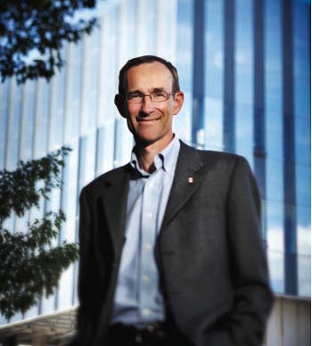
Speaker: Dr. Raymond Laflamme
(Executive Director in Institute for Quantum Computing at Univesity of Waterloo)
Title of Presentation:
Quantum Information Processing
Abstract:
We are at the dawn of a new technological revolution. Just as the 19th century was the Machine Age and the 20th century was the Information Age, the 21st century promises to go down as the Quantum Age. Harnessing and controlling the counterintuitive properties of quantum mechanics will enable previously unimaginable technologies that will transform the ways we work, communicate and live. Quantum information processing forces us to learn a new language — one that describes the behaviours and interactions of the universe's most fundamental building blocks. We are now learning to speak this quantum language — to control quantum systems and apply them toward unprecedented applications in the laboratory and beyond. We are discovering new ways to navigate the nano-scale world, and we are tapping into the incredible potential of quantum computers, sensors, communications devices and more. Quantum technologies are already finding real-world applications, and the fundamental groundwork is now being laid for revolutionary advances in the coming years, from ultra-powerful computers to unbreakable cryptography and more. I will describe some of the recent progress in the field, particularly in the experimental realm, such as implementations of algorithms on small quantum processors — an important demonstration of control over the quantum world. I will also mentin the development of quantum communication, in particular to cryptography and conclude by exploring some of the unexpected offshoots of quantum information research, such as advances in neutron interferometry and oil exploration.
Biography:
Laflamme is originally from Québec City, where he studied Physics as an undergraduate at the Université Laval. Prof. Laflamme and his colleague Don Page are responsible for having changed Hawking’s mind on the reversal of the direction of time in a contracting universe (see Hawking’s book, A Brief History of Time). After surviving Part III of the Mathematical Tripos at the University of Cambridge, Raymond Laflamme completed his PhD on aspects of general relativity and quantum cosmology in the Department of Applied Mathematics and Theoretical Physics (DAMTP) under the direction of Stephen Hawking. From 1988-1992, Laflamme held a Killam Postdoctoral fellowship at UBC, and a Postdoctoral fellowship at Peterhouse College, University of Cambridge. From 1992-2001, Prof. Laflamme worked as a research scientist at Los Alamos Research Laboratory, where his interests shifted from cosmology to quantum computing.
Since the mid-1990s, Laflamme has developed theoretical approaches to quantum error correction, and has conducted experimental demonstrations of these techniques. In collaboration with Emmanuel Knill, Laflamme gave conditions for quantum error correcting codes, and established the fault-tolerance threshold, thereby showing that quantum computers can be robust to errors. With colleagues, he has developed a blueprint for a quantum information processor using linear optics, and devised and implemented new methods to for making quantum information robust against corruption in both cryptographic and computational settings.
In 2001, Laflamme returned to Canada as the founding Executive Director of the Institute for Quantum Computing (IQC), and as a founding member of the Perimeter Institute For Theoretical Physics. Dr. Laflamme was the Scientific Director of QuantumWorks, Canada’s national research consortium on quantum information science, and has been Director of the Quantum Information Program at the Canadian Institute for Advanced Research (CIFAR) since its inception in 2003. Dr. Laflamme holds the Canada Research Chair in Quantum Information, and is a Professor in the Department of Physics and Astronomy at the University of Waterloo. In 2010 he founded Universal Quantum Devices, a startup commercializing spinoffs of quantum information research, with colleagues Thomas Jennewein and Steve MacDonald.
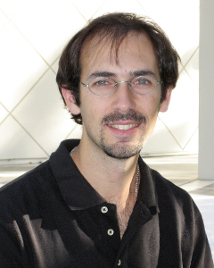
Speaker: Dr. Rolando D. Somma
(Theoretical Physicist and Staff at Los Alamos National Laboratory)
Title of Presentation:
Quantum Computing and Quantum Communications at LANL
Abstract:
Two main goals in quantum information are the design of novel methods for speeding up computations and the implementation of fundamentally secure communications, by taking advantage of the surprising effects of quantum mechanics. On one side, it is now known that if a large-scale quantum computer existed today, it could solve some important problems, such as factoring, much faster than their conventional counterparts. This implies, in particular, that quantum computers play an important role in cryptography as they could break widely used encryption methods such as RSA. On the other side, quantum mechanical effects can also be exploited to implement cryptographic protocols that are both, fundamentally secure and "future-proof". These are in contrast with conventional cryptography, for which security is solely based on computational assumptions, which makes it vulnerable against future attacks. LANL's quantum information science and technology research spans from fundamental questions of quantum theory, to quantum computation and quantum communications. We are developing fast quantum algorithms for optimization for a wide range of applications, from the simulation of quantum physical systems to combinatorial optimization, at speeds that would be otherwise impossible. We are implementing secure quantum communication networks (a quantum internet) with the goal of distributing cryptographic keys via novel authentication protocols based on secure identification and secret sharing. In this talk, I will explain some of the basics behind quantum computation and quantum communications, and summarize some of the recent LANL efforts in this rapidly growing and exciting field.
Biography:
Dr. Somma is a theoretical physicist and staff at Los Alamos National Laboratory, working on quantum information theory and condensed matter physics. Somma has a long-standing record in the field, being the coauthor of over thirty five refereed and highly cited publications in quantum algorithms, optimization, quantum cryptography, quantum metrology, and quantum phase transitions. Prior to joining LANL as a staff, Dr. Somma held a postdoctoral position at the prestigious Perimeter Institute, Waterloo, Canada. Somma is the principal investigator of two projects in quantum information that aim at exploring the advantages of quantum physics for secure communications and fast problem solving. Dr. Somma has various student and postdoctoral prizes, is affiliated to some other major institutions in the field, and is also an adjunct assistant professor at the University of New Mexico.
Commercialization and Standardization Plenary Sessions
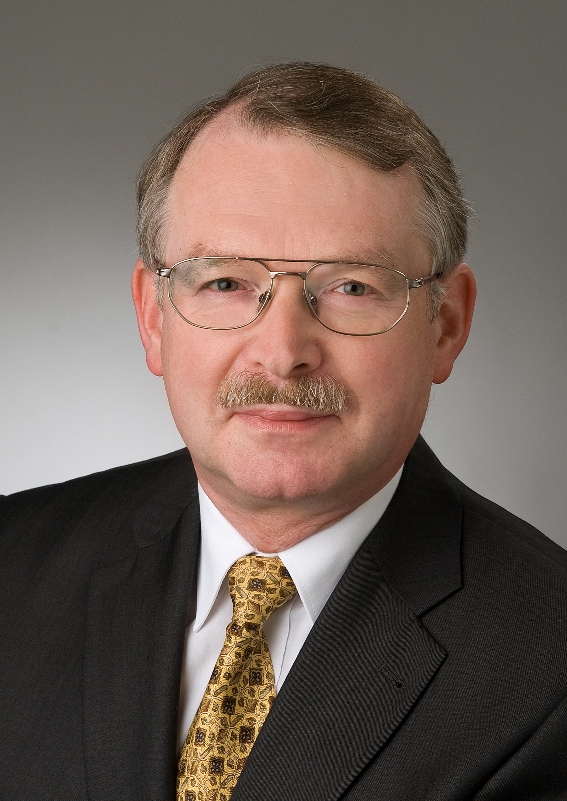
Speaker: Werner Mohr
(Nokia Solutions and Networks, Munich, Germany)
Title of Presentation:
Changing the Innovation Cycle
Abstract:
Europe has a long tradition of publicly funded collaborative research projects. In particular in mobile and wireless communications major research has been performed towards 3G - UMTS, LTE and IMT-Advanced systems, which was used for consensus building between major players in order to prepare globally accepted standards. Research consortia usually comprise players from industry, SMEs and the research community in order to ensure innovative ideas and future economic exploitation. Currently, a new framework research program is under preparation in Europe. In the ICT domain many different objectives will be addressed including 5G systems. These programs provide specific measures for innovative SMEs to support their market entrance and to provide a platform to build contacts to other players. The European Technology Platform Net!Works offers networking opportunities for SMEs to support their participation in research consortia. This presentation will describe the approach in Europe for collaborative research and the SME instruments.
Biography:
Werner Mohr was graduated from University of Hannover, Germany, with a Master Degree in electrical engineering in 1981 and a Ph.D. degree in 1987. He is with Nokia Solutions and Networks in Munich Germany, where he is Head of Research Alliances. Currently, he is chairperson of the Net!Works European Technology Platform and he was founding chair of WWRF. Werner Mohr coordinated several collaborative publicly funded research projects on 3G, LTE and IMT-Advanced radio interface, which developed the basic concepts for future radio standards.
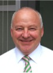
Speaker: Dr.-Ing. Hendrik Berndt
(Vice President and Chief Science Officer at DOCOMO Communication Laboratories Europe)
Title of Presentation:
The Mobile Operator’s Challenge on Business-Relevant Technology Advances
Abstract:
Operators are facing network challenges based on increasing traffic originated by new types of devices, new applications and video traffic as the major driver of steep growth. Additional operators experience an ever-growing demand set off by heightened customer expectations. Navigating this digital storm requires advances in network and wireless technologies of which some are presented within the talk. In particular Quality of Experience based traffic management, elastic networking and future requirements on radio access are elaborated on with the common goal to improve resource utilization against an uncontrollable and unpredictable traffic change.
Biography:
Dr.-Ing. Hendrik Berndt, Vice President and Chief Science Officer is directing the research at DOCOMO Communication Laboratories Europe since the onset of the company in the Year 2000. Additional he currently serves as Vice President of the Wireless World Research Forum for Europe, Africa and Middle-East, and aids as elected Steering Board member the Object Management Group, OMG, and the European Technology Platform Net!Works.
Speaker: Brad Lowe
(Wavefront Wireless Commercialization Centre)
Title of Presentation:
Wireless Commercial Resources in Canada
Abstract:
Here, we present an overview of the programs and services provided by Wavefront, Canada’s National Centre of Excellence in Commercialization & Research for Wireless Communications. This session will cover the key hurdles to growth faced by Canadian technology companies and how one can access programs through Wavefront and other entities to address these challenges.
Biography:
As Wireless Accelerator Architect and managing Executive in Residence, Brad Lowe is responsible for the programs and talent supporting the success and growth of wireless companies in the Wavefront Accelerator. Prior to Wavefront, Brad worked in management positions at established, respected tech companies such as Nokia, Redback Networks, Abatis, and MacDonald Dettwiler.
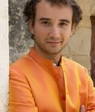
Speaker: Dr. Mischa Dohler
(Chair Professor in Wireless Communications at King's College London, UK)
Title of Presentation:
Changing the Innovation Cycle
Abstract:
R&D has largely been abandoned in large companies. Most standards have become superfluous with emerging software defined technologies. VC funding is being transformed through crowdfunding. And now universities are losing their very own ground of existence with the emergence of Massive Open Online Courses (MOOCs). In short, the innovation cycle of the 21st century is changing dramatically. This talk will discuss the underlying forces and needs to innovate innovation, and the latest trends in industry, governance and academia alike. I will dwell on strategic thoughts about the role specifically universities should take in this ecosystem to be competitive. I will outline steps to make commercialization a cornerstone of academic life, without jeopardizing its core values.
Biography:
Mischa Dohler is Chair Professor in Wireless Communications at King's College London, UK. He is Distinguished Lecturer of the IEEE ComSoc, Senior Member of the IEEE, and Editor-in-Chief of ETT. He frequently features as keynote speaker and had press coverage by the BBC and Wall Street Journal. He is a tech company investor and also entrepreneur, being the cofounder, former CTO and now with the Board of Directors of Worldsensing. He is fluent in 6 languages. In the framework of the Mobile VCE, he has pioneered research on distributed cooperative space-time encoded communication systems, dating back to December 1999 and holding some early key patents. He has published more than 160 technical journal and conference papers at a citation h-index of 32 and citation g-index of 70, holds a dozen patents, authored, co-edited and contributed to 19 books, has given more than 30 international short-courses, and participated in ETSI, IETF and other standardisation activities. He has been TPC member and co-chair of various conferences, such as technical chair of IEEE PIMRC 2008 held in Cannes, France. He is/has been holding various editorial positions for numerous IEEE and non-IEEE journals and special issues. From 2008-2013, he held various roles at CTTC such as Director of Research, Head of Intelligent Energy [IQe] and Senior Researcher. From 2010-2012, he has been the CTO of Worldsensing. From 2005 to 2008, he has been Senior Research Expert in the R&D division of France Telecom, France. From 2003 to 2005, he has been lecturer at King's College London, UK. At that time, he has also been London Technology Network Business Fellow receiving Anglo-Saxon business training, as well as Student Representative of the IEEE UKRI Section and member of the Student Activity Committee of IEEE Region 8 (Europe, Africa, Middle-East and Russia). He obtained his PhD in Telecommunications from King's College London, UK, in 2003, his Diploma in Electrical Engineering from Dresden University of Technology, Germany, in 2000, and his MSc degree in Telecommunications from King's College London, UK, in 1999. Prior to Telecommunications, he studied Physics in Moscow. He has won various competitions in Mathematics and Physics, and participated in the 3rd round of the International Physics Olympics for Germany.
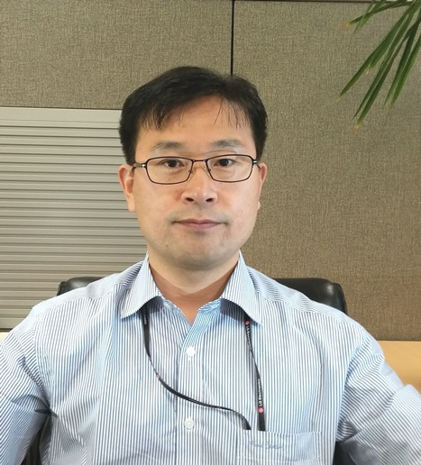
Speaker: Dr. Ki-Dong Lee
(Senior Staff Researcher in LG Electronics Mobile Research, San Diego, California)
Title of Presentation:
Move Together to Stay Together
Abstract:
The evolution of the mobile service market has profound implications onto the lifestyle of today’s people living in the era of mobile networking – how they get information, and buy and sell goods, involve themselves in social networking and even more. The evolution is the result of something complex done in the market. However, it is notable that “technology” itself is one of the most important factors towards evolution but there’s something beyond that as we have seen the survival of certain technology in the market is not merely based on what it is. Instead of repeating the importance of technology itself, this talk is intended to provide the audience with an opportunity to build up their own insight on how to use the technology to create values in a more diverse dimension, such as how “people” will behave in the market – to create new mobile services which are richer, more secure, and convenient to use in the right situation of every instant in our daily life. Having these huge potential opportunities in mind, this talk will discuss a wide range of brand-new mobile service features and how they are expected to be in the market if supply and demand want to stay together.
Biography:
Ki-Dong Lee received B.S., M.S., and Ph.D degrees in Operations Research/Industrial/Systems Engineering from Korea Advanced Institute of Science and Technology (KAIST). He has over 15 years of professional experiences in academy and industry. In the early stage, he developed a software application for mixed binary integer and linear programming problems with a user-friendly lexical analysis module, and he devoted himself to probabilistic modeling of user behavior, scheduling and cryptography in wireless network. He was involved with several government-funded R&D projects on design/analysis for interactive satellite multimedia systems (for fixed and high-speed mobile terminals) with his main role on the design and development of resource management sub-systems and scheduling modules. Later, he led a project on 4G Transport Layer technology. His current research interests include socio-economic approach to design/analysis of and value creation of brand-new mobile services with an emphasis on handset evolution both in transport/application layers and man-machine interface. He is Senior Staff Researcher in LG Electronics Mobile Research, San Diego, California, with co-affiliation of CTO Advanced Communication Technology Lab, Korea. Prior to this, he was a Visiting Scientist at The University of British Columbia (UBC), Canada. He received several awards from IEEE ComSoc (2005), International Federation of Operational Research Societies/Asia Pacific Operations Research Society (2006), Korea Math Society (1989), SK Telecom (2008), and ETRI (2005). He served as a co-guest editor for IEEE Wireless Communications and TPC member for many IEEE-sponsored and non-IEEE conferences. He is a Senior Member of the IEEE (2007).
Cyber Security Panel Session
Description:
Cybersecurity in Future Internet will face new challenges and threats. Global connectivity of people, things, and services on a large scale, new access channels, massive resource sharing in clouds as well as cyber-physical convergence require innovative technical solutions and a sociopolitical discourse.
The cybersecurity session will discuss implications to security, privacy, and trust in Future Internet. Panelists are (1) Michelle Chibba, Director, Policy and Special Projects at Office of the Information and Privacy Commissioner - Ontario, Canada, (2) Atta Badii, Research Centre Director, Intelligent Systems Research Laboratory, Univ. of Reading, UK, and (3) Nigel Jefferies, Chair of WWRF. Your moderator is Mario Hoffmann.
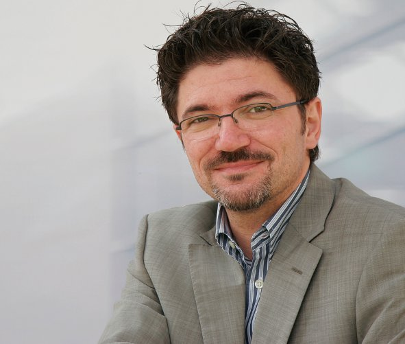
Moderator: Mario D. Hoffmann
( Fraunhofer Institute for Applied and Integrated Security (AISEC))
Biography:
Mario D. Hoffmann (43) received his master degree in computer science from Darmstadt University of Technology, Darmstadt, Germany, in 1998. His master thesis he completed at Nanyang Technological University, Singapore. In 1999 he joined the Fraunhofer Institute for IT Security (SIT) in Darmstadt becoming head of department ”Secure Mobile Systems” in 2004. Since 2009 he has been responsible for the research department “Service & Application Security” at the Fraunhofer Institute for Applied and Integrated Security (AISEC) in Garching (near Munich). Mario Hoffmann has been coordinating research projects and proposals for more than ten years. His research is dedicated to multilateral secure identity management in contextual environments. Mr. Hoffmann has been chair of the Working Group "Security & Trust" of the Wireless World Research Forum (WWRF) from 2005 to 2012. Since 2009 he has been playing an active role in the Kantara Initiative – hosting the yearly conference in 2012. He has been track and workshop chair as well as member of the programme committee of distinguished conferences and author and co-author of more than twenty publications.
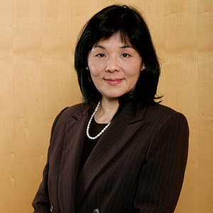
Panelist: Michelle Chibba
(Policy and Special Projects at Office of the Information and Privacy Commissioner)
Biography:
Michelle Chibba oversees the Policy Department and Special Projects at the Office of the Information and Privacy Commissioner of Ontario, Canada (IPC). Her department is responsible for conducting research and analysis, as well as liaising with a wide range of stakeholders to support the Commissioner’s leadership role in proactively addressing privacy and access issues affecting the public. She has over two decades of professional experience, most of it in the public sector where she managed several strategic policy projects. Early in her career, Ms. Chibba worked in the private sector as well as for a non-governmental policy research organization in the U.S. One of her many accomplishments within the government was as Quality Manager for the Health Economic Development Unit, where she was instrumental in implementing a quality management system that was successfully registered to the ISO 9001 standard. For this, she received the Amethyst Award for Outstanding Public Service. She is also a recipient of an Ontario Ministry of Health and Long-Term Care ACE Award for achievement, commitment and excellence in Stakeholder/Partner Relations. Ms. Chibba received her master’s degree from Georgetown University (Washington, D.C.), with a focus on ethics and international business.
Panelist: Prof. Atta Badii
(Research Centre Director, Intelligent Systems Research Laboratory, Univ. of Reading, UK)
Biography:
Prof. Atta Badii, Founding Director of Intelligent Systems Research Laboratory, is a high ranking professor at the University of Reading, School of Systems Engineering and Chair of Secure Pervasive Technologies and has a multi-disciplinary academic and industrial research experience in the fields of ICT Security & Trust Architectures and Distributed Intelligent Systems. Atta has made major contributions to over 25 large collaborative research projects to-date and has served as the Scientific and Technical Leader of several projects at both national and international level; has over 180 publications and has served as coordinator/technical leader/invited expert e.g. as the Chair of the Security Architectures and Virtualisation Taskforce of the SECURIST taskforce and as the Chair of the European Video-Analytics Network of Excellence.
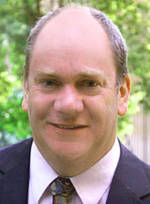
Panelist: Dr. Nigel Jefferies
(Chair of WWRF and Senior Standards Manager with Huawei Technologies)
Biography:
Nigel Jefferies is a senior standards manager with Huawei Technologies and Chairman of the Wireless World Research Forum. He is currently a member of the Secure ICT Research and Innovation working group of the European Commission’s NIS (Network Information Security) Platform. Previously he was Head of Academic Relationships within Vodafone Group Research & Development and a Principal Mathematician at Racal Research Ltd. In the past he led the European-funded IST project SHAMAN, which studied the security of future mobile systems, and ran the Secure Applications Steering Group for Mobile VCE. Other collaborative research projects on various aspects of security for mobile communications include 3GS3 in the UK-funded LINK programme, and ASPeCT and USECA in the European ACTS programme. His research interests include cryptography, security of systems and applications of mathematics to telecommunications. He received a PhD in functional analysis from Goldsmith's College, London, and an MA in mathematics from the Queen's College, Oxford, and is a visiting professor at Kingston University. He is a Fellow of the Institute of Mathematics and its Applications and a Chartered Mathematician.
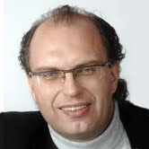
Panelist: Jörg Heuer
(Research & Innovation Director Payment & Transactions, Innovation Policy at Deutsche Telekom Laboratories)
Biography:
Jörg Heuer started working for a Deutsche Telekom engineering subsidiary in 1997, defining and leading more than 30 projects for all divisions of the Deutsche Telekom group. Currently Heuer is responsible for Technology Exploration and the publishing of a periodic report on technology developments for CTO/ CMO level management and innovation departments of Deutsche Telekom group. He is the responsible senior manager for the ‘Overarching AAA Programme’ (Authentication, Authorization, Accounting) of the group’s innovation department.
Optical Wireless Plenary Session
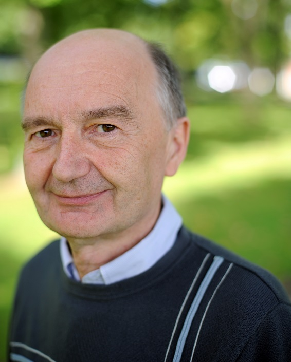
Speaker: Dr. Roger Green
(Head of the Division of Electrical and Electronic Engineering at Warwick)
Title of Presentation:
(To be announced.)
Abstract:
(To be announced.)
Biography:
Roger Green became Professor of Electronic Communication Systems at Warwick in September 1999, and was Head of the Division of Electrical and Electronic Engineering from August 2003 for five years. He has published around 270 papers in the field of optical communications, optoelectronics, video and imaging, and has several patents. 57 Ph.D. research students have qualified under his supervision. He leads the Communications Systems Laboratory in the School of Engineering at Warwick, and is also responsible for activities involving international exchanges. His interests include signal processing, optical wireless and optical fibre communications. He holds a DSc in Photonic Communications, Systems, and Devices, is a Fellow of the UK IEE, and a Fellow of the Institute of Physics. He is a Senior Member of the IEEE, and a proposal assessor for the French ANR, and the Australian ARC, as well as the UK EPSRC. He is Secretary to COST IC1101 (OPTICWISE), Chair of WG4 “Advanced Photonic Components”, and Co-Chair of the SIGs for Visible Light Communications and Underwater Optical Communications in the COST Action. He holds research contracts with the EPSRC, Thales Research, and the Australian ARC, and is a member of the Warwick arm of the CUSP project team inaugurated by Mayor Bloomberg of New York, USA.
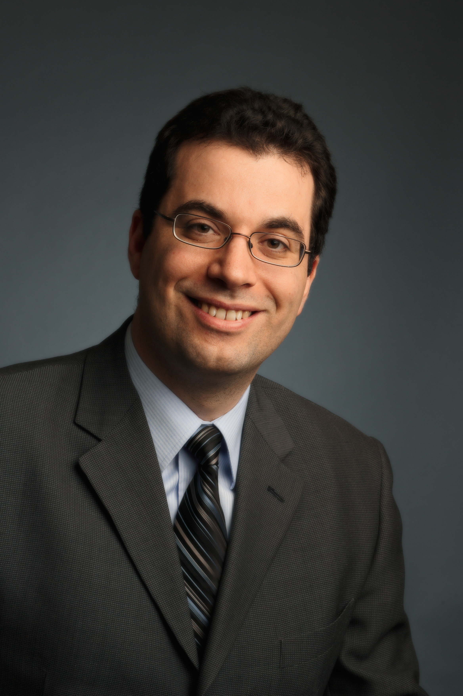
Speaker: Dr. Steve Hranilovic
(Associate Professor in the Department of Electrical and Computer Engineering at McMaster University)
Title of Presentation:
Indoor to Outer space: theory and experiments in optical wireless communications
Abstract:
Due to the increasing scarcity of RF spectrum and growing interference due to multiple users, deploying next generation high-speed wireless networks is becoming increasingly difficult. The use of unlicensed optical bands for wireless communications has been heralded as an exciting development for future broadband access.
This talk provides an overview of the research into optical wireless systems taking place at the Free-space Optical Communication Algorithms Laboratory (FOCAL) at McMaster University in Hamilton, Canada. The main thrusts of the group will be highlighted by emphasizing three recent contributions. Firstly, some details of a 2 km free-space optical test bench facility will be presented along with experimental results in radio-over-FSO transmission of DVB-T signals. Secondly, some fundamental results on the capacity-achieving distributions of discrete-time Poisson channels under both peak and average amplitude constraints will be given as well as a practical coding scheme to approach capacity. Such channels model long range inter-satellite laser communication links operating over many thousands of kilometres. Finally, details of signal design for bandlimited optical intensity channels using a new approach, i.e., optical impulse modulation, will be reviewed. Such channels can be found in indoor diffuse infrared channels as well as visible light communication systems. The talk will conclude with a brief overview of other ongoing research directions.
Biography:
Steve Hranilovic received the B.A.Sc. degree with honours in electrical engineering from the University of Waterloo, Canada in 1997 and M.A.Sc. and Ph.D. degrees in electrical engineering from the University of Toronto, Canada in 1999 and 2003 respectively. He is currently an Associate Professor in the Department of Electrical and Computer Engineering, McMaster University, Hamilton, Ontario, Canada. During 2010-2011 he spent his research leave as Senior Member, Technical Staff in Advanced Technology for Research in Motion, Waterloo, Canada. His research interests are in the areas of free-space and optical wireless communications, digital communication algorithms, and electronic and photonic implementation of coding and communication algorithms. He is the author of the book Wireless Optical Communication Systems (New York:Springer, 2004). Dr. Hranilovic is a licensed Professional Engineer in the Province of Ontario and was awarded the Government of Ontario Early Researcher Award in 2006. He currently serves as an Editor for the IEEE Transactions on Communications in the area of Optical Wireless Communications.
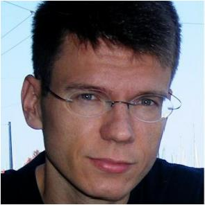
Speaker: Dr. Aleksandar Jovicic
(Senior Staff Engineer at Qualcomm Research)
Title of Presentation:
(To be announced.)
Abstract:
(To be announced.)
Biography:
Aleksandar Jovicic received Ph.D. and M.S. degrees in Electrical and Computer Engineering from the University of Illinois at Urbana-Champaign in 2007, and a B.S. degree in Electrical and Computer Engineering from the University of Wisconsin – Madison in 2001. He is currently a Senior Staff Engineer at Qualcomm Research in Bridgewater, New Jersey where he is leading a number of Research and Development programs in wireless communication, networking and machine learning. Aleksandar has 20 issued US patents and over 60 pending patent applications and is an author of five journal publications in IEEE Transactions on Information Theory and IEEE/ACM Transactions on Networking. Aleksandar is the recipient of the 2007 Robert T. Chien Memorial Award for Excellence in Research from the ECE Department of the University of Illinois.
Working Group D
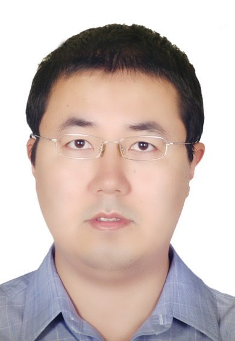
Speaker: Dr. Yongxing Zhou
(3GPP LTE RAN standard in Huawei)
Title of Presentation:
“Spectrum Technology Evolution for future cellular systems” & ” WWRF_small cell enhancement with MSA”
Abstract:
The future communication network is foreseen as a fully integrated and high-efficiency control platform with huge volume for diversified services, e.g. MTC, D2D, eMBMS and so on. The adaptation, multiplexing and sharing between services can be enabled by more flexible spectrum utilization methodology. Moreover, possible evolution of paired and unpaired spectrum for flexible utilization is also addressed.
Biography:
Dr. Yongxing Zhou(yongxing.zhou@huawei.com) received his B.S degree in electronic engineering from Tsinghua University, China, in 1997 and his Phd. degree from Tsinghua University in 2002. His research area includes carrier/spectrum, MIMO, cooperative communication, cognitive radio, etc. He is currently responsible for 3GPP LTE RAN standard in Huawei.
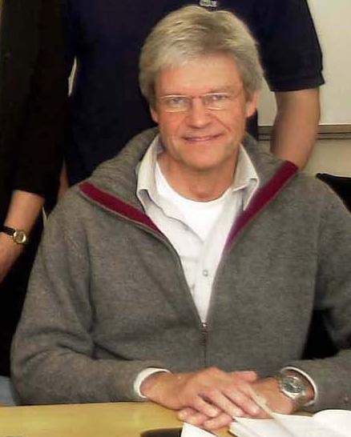
Speaker: Dr. BO THIDÉ
(Professor at Swedish Institute of Space Physics)
Title of Presentation:
Angular Momentum Radio - Principles and Techniques
Abstract:
The increasing congestion of the radio frequency bands imposes serious
limitations on the capacity and capability of existing wireless
information infrastructures mainly based on the use of the physical
observable electromagnetic linear momentum, a conserved quantity
(constant of motion). Our approach to overcome these limitations is
to enable a frequency re-use by exploiting other physical conserved
observables carried by the electromagnetic field, such as angular
momentum. The general, fundamental physical principles of the use of
the orbital part of the EM angular momentum (OAM) in radio
communications will be described.
While the increase of channel capacity by using OAM states was
demonstrated in the optical regime recently, the receiving antennas in
commercial radio links have a much smaller extent than the transmitted
beam, making the signal reception and characterization of the OAM
state demanding. Moreover, radio data transmission with N channels
per polarisation state at the same frequency for radio links when N>2
is known to be notoriously difficult to realise even with multiport
techniques, long antenna baselines and digital post-processing. We
will report results from an outdoor experiment where the physical
properties of OAM states were used to transfer information, using
far-field multiplexing/demultiplexing of N=3 coexisting, collinear,
vertically polarised and mutually independent OAM radio beams, opening
new perspectives in wireless telecommunications.
Biography:
Bo Thidé is a Swedish physicist who studies radio waves and other electromagnetic radiation in space, particularly their interaction with matter and fields. He received his B.Sc. in 1972, his M.Sc. in 1973, and defended his Ph.D. thesis at Uppsala University in 1979. His Ph.D. was obtained under the supervision of professor Per Olof Fröman at the Department of Theoretical Physics, Uppsala University. He has worked at the Swedish Institute of Space Physics in Uppsala since 1980, where he has been a professor since 2000. In 1981, Bo Thidé discovered electromagnetic emissions stimulated by powerful radio waves in the ionosphere during experiments in August 1981 at the EISCAT facility in Tromsø, Norway.[1] For the first time it was shown that the plasma turbulence excited by powerful radio waves in the ionosphere radiates secondary electromagnetic radiation that can be detected and analysed on the ground. These stimulated electromagnetic emissions (SEE) exhibit a rich spectral structure, particularly near harmonics of the ionospheric electron gyro frequency. The SEE technique is now a useful tool in plasma turbulence research. For his discovery, Thidé was awarded the Edlund Prize of the Royal Swedish Academy of Sciences in 1991.
Joint Working Group C/D
Speaker: Dr. HyeonWoo Lee
(Associate Professor at DanKook University, Korea)
Title of Presentation:
Introduction to 5G preparation activities in Korea
Abstract:
Introduction to Korea 5G forum history, organization, roles and 5G vision; Overviews on 5G related national projects in Korea; Potential Collaboration among national/regional 5G activities for global harmonization
Biography:
Dr. Hyeon Woo Lee is currently associate professor of mobile system engineering dept. of college of international studies at DanKook University of Korea. From March 2009 to Feb. 2013, He served as a National R&D Program Director of KEIT (Korean Evaluation Institute of Industrial Technology) under Ministry of Knowledge Economy of Korea. He had been work as Director and Head of Global Standard & Research Lab. in Telecom R&D Center of Samsung Electronics Co. in Korea until Feb. 2009 He received BSEE from Seoul National University, 1985 and MBA from Sogang University, 1989, in Korea. He got MS and Ph. D degree at KAIST, Korea in 1994 and 2003 respectively. He Joined Samsung Electronics in 1984, starting from development of Telecommunication Systems in several wireline and wireless communication field. Since 1996, he devoted himself to national and international standardization work such as ETSI, ARIB, TTA, 3GPP , 3GPP2 and ITU. In addition to the on going standard work, he paid special attention to 4G/B3G related works in ITU-R TG8/1, WP8F . He served as a vice chairman of 3GPP TSG-RAN WG1 on UMTS radio from 2001-2002 and served as a vice chairman of WWRF WG4 responsible for 4G radio interface in 2004. From 2005 to 2009, he has been vice chairman of 3GPP TSG-RAN in charge of UMTS and LTE radio and network evolution. He was Korean TTA (Telecom. Tech. standard Association) PG302 (WiBro) international coordination Group chair and served as a Korean NGMC (Next Gen. Mobile Comm.) Forum terminal WG chair as well. He is currently chairman of Korean TTA PG701 (IMT-Adv.) and Chairman of CJK (China Japan Korea) IT standard collaboration meeting IMT WG. He is a member of KICS, IEEE and IEICE.